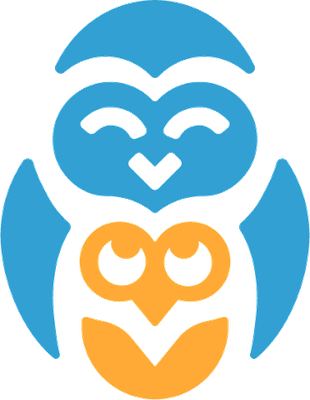

Lingua
Science · 6. ročník
← Zpět na kapitolu
Kapitola 02
Země jako místo
·
Zdroje
Videa & zdroje
Klíčová slova
Výklad
Kartičky CLIL
Testík
Zdroje
Videa & aplikace
ČT edu — Zeměpis
videa o světadílech a orientaci
→
Khanova škola — Geografie
časová pásma, měřítko, mapy
→
Mapy.cz
česká mapová aplikace · GPS, plánovač
→
Google Earth
3D globus s družicovými snímky
→
Knihy a e-zdroje
E-knihovna Lingua (Everbis)
hledej „atlas", „kontinenty", „mapa"
→
Knihovna K. H. Máchy Litoměřice
atlasy, encyklopedie zeměpisu
→
Time and Date — World Clock
aktuální čas v každém pásmu (anglicky)
→
ČÚZK — Český úřad zeměměřický
oficiální mapy ČR a katastr
→
←
Předchozí
Testík
Další kapitola
Vznik a podmínky života
→